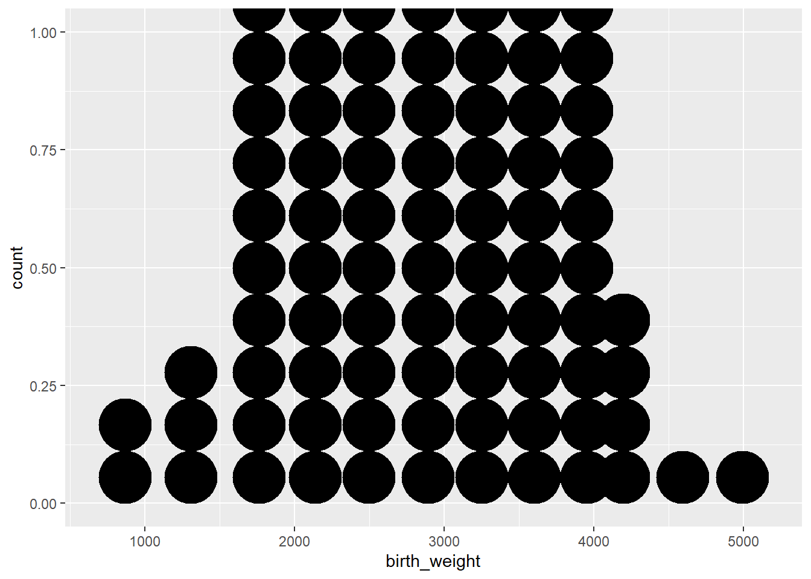

1 Exploratory Data Analysis (Summary Figures)
1.1 Introduction.
The present session will focus on basics of data visualization. The process of visualization and creation of summary tables go hand in hand, however, we shall limit our discussion to creating beautiful figures here!
Before we start with learning how to create graphs/ plots/ figures using R, it is important to understand that the selection of type of plots is dependent entirely upon the number and type of variables selected. It is strongly recommended that the same be refreshed and strengthened by participants from time to time for advanced use of data analytics in future.
Programming Basics
Data visualization is a powerful tool for data science in epidemiology. The basics of programming for creating plots using ggplot package includes understanding of four important aspects.
- Use of reusable/ reproducible templates.
- Creation of different types of plots using geoms.
- Addition of variables using mapping.
- Customization of plots using settings.
1.2 Visualization of single variable.
1.2.1 Continous variable
For illustration, we will plot birth weights to understand the distribution pattern among all study participants in birth weight data set.
Code
ggplot(data = df) + # Template
geom_histogram( # geom
mapping = aes(x = birth_weight), # mapping
binwidth = 350, # mandatory settings
color = "blue", # optional settings
fill = "red",
linetype = 2,
alpha = 0.8,
size = 1)
ggplot(data = df) + # Template
geom_freqpoly( # geom
mapping = aes(x = birth_weight), # mapping
binwidth = 350, # mandatory settings
color = "blue", # optional settings
fill = "red",
linetype = 2,
alpha = 0.8,
size = 1) Histogram
Frequency polygon
Code
ggplot(data = df) + # Template
geom_dotplot( # geom
mapping = aes(x = birth_weight), # mapping
binwidth = 350, # mandatory settings
size = 1)
ggplot(data = df) + # Template
geom_boxplot( # geom
mapping = aes(y = birth_weight), # mapping
size = 1) Dot plot

Box plot
1.2.2 Discrete/ Categorical variable.
Illustrative example: In the birth weight dataset, if we are interested to understand the distribution of smoking history (Present/Absent) among mothers.
Add optional arguments (settings) to enhance visualizations.
What happens if instead of writing {mapping = aes()}, we write only {aes()} in the code chunk?
Code
ggplot(data = df) +
geom_bar(mapping = aes(x = smoke_cat))
ggplot(data = df) +
geom_bar(mapping = aes(y = smoke_cat)) Bar chart (Vertical)
Bar chart (Horizontal)
1.3 Visualization of two variables.
1.3.1 Two continous variables.
Illustrative example: In the birth weights dataset, mother’s weight at last menstrual period and birth weight of the infant are continuous variables. We might be interested in looking at how mother’s weight is associated with birth weight of an infant.
Code
ggplot(data = df) +
geom_point(aes(x = maternal_weight, y = birth_weight),
color = "red",
size = 1,
shape = 1,
stroke = 1)
ggplot(data = df) +
geom_point(aes(x = maternal_weight, y = birth_weight),
color = "red",
size = 1,
shape = 1,
stroke = 1) +
geom_smooth(aes(x = maternal_weight, y = birth_weight),
method = "lm")Scatter Plot
Scatter Plot with Regression line
1.3.2 One discrete and one continous variable.
Illustrative example: In the birth weights dataset, smoking history is categorical and birth weight is a continuous variable. We might be interested to estimate if maternal smoking history has effect on infant birth weights.
Code
ggplot(data = df) +
geom_bar(aes(x = smoke_cat, y = birth_weight),
stat = "identity") +
labs(x = "Smoking History",
y = "Birth Weight")
ggplot(data = df) +
geom_boxplot(aes(x = smoke_cat, y = birth_weight),
coef = 1.5)Multiple bar chart
Box and Whisker plots
1.3.3 Two discrete variables
Illustrative example: In the dataset, smoking history and whether the infants birth weight was low or not are two discrete/ categorical variables. As a researcher, we would like to see the relationship between these two discrete variables.
Note
To see relationships between two discrete variables, multiple bar charts and component bar charts are used. Till now, the fill argument has been used in the setting section of the code. If you look carefully, while in the setting section, we manually placed the value/ color. The same argument can also be used in mapping section within aesthetics.
Code
ggplot(data = df) +
geom_bar(aes(x = smoke_cat, fill = race_cat),
position = "dodge")1.4 Way forward
Now, you know how to create the basic plot. However, plot has additional components such as title, subtitle, caption, axis labels, legend, etc. The same also requires deliberation and details for the same can be learnt from multiple resources. We recommend R Graphics Cookbook https://r-graphics.org/ as a good resource for the same. We are introducing you to this important aspect of data visualization, however considering the present workshop as an introductory workshop, we shall introduce you to AI powered programming for beginners, however, we plan to cover additional aspects such as animated plots, 3D plots, spatial plots, other ggplot extensions, etc during intermediate/ advanced levels only. Enjoy plotting!!